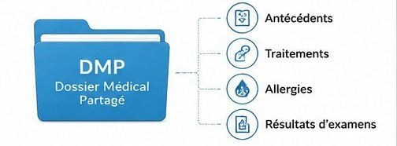

Cours standard adapté : mêmes objectifs que le programme CAP, textes plus courts, documents lisibles, questions guidées et espaces d’écriture.
3 séancesC1 à C6Audio sur les blocsDocuments sous-titrés
Mode d’emploi accessible
Lire dans l’ordre. Chaque document est suivi de ses questions. Les images sont accompagnées d’un texte : l’image aide, mais elle n’est jamais indispensable pour répondre.
Utiliser les outils en haut de page. Le bouton Écouter lance la lecture. Un second clic arrête la lecture. Le mode Dys augmente la lisibilité.
Séance 1 — Santé, capital santé et facteurs
Objectif. Expliquer les effets des facteurs internes et des facteurs externes sur la santé.
Compétences :C1
Traiter l’information : repérer une information utile dans un document.
C2
Analyser une situation : comprendre le problème, les personnes concernées et les causes possibles.
C3
Mettre en relation : faire le lien entre une information du document et une connaissance du cours.
Situation — Le cas de Léa
Léa, 16 ans, prépare un CAP. Depuis plusieurs semaines, elle se sent fatiguée. Elle dort peu, mange souvent des produits très sucrés et reste longtemps sur son téléphone le soir.
Sa grand-mère lui dit : « Ta santé dépend de ton corps, mais aussi de tes habitudes et de ton environnement. Si la fatigue continue, il faut consulter. »
Léa se demande : « Ma santé dépend de quoi ? Et comment faire pour me soigner correctement ? »
1. À partir de la situation,
1.1C2Identifier le problème principal de Léa en cochant une réponse.
Indice
Repérer ce qui change dans le quotidien de Léa : fatigue, sommeil, alimentation, téléphone.
Corrigé
Elle se sent fatiguée et veut comprendre ce qui influence sa santé.
Explication
Un problème de santé ne commence pas toujours par une maladie visible. Exemple : une fatigue qui dure plusieurs semaines peut montrer que le sommeil ou l’alimentation fragilise le capital santé.
1.2C2Compléter le tableau QQOQCP.
Question
Réponse attendue
Qui ?
Quoi ?
Comment ?
Pourquoi agir ?
Indice
Lire la situation comme une enquête : qui est concerné, quel signe apparaît, quelles habitudes sont citées.
Corrigé
Qui : Léa. Quoi : fatigue. Comment : elle dort peu, mange sucré, utilise longtemps son téléphone. Pourquoi agir : pour préserver sa santé et consulter si besoin.
Explication
Le QQOQCP sert à découper une situation compliquée en informations simples. Exemple : au lieu d’écrire « Léa va mal », on précise « Léa dort peu et se sent fatiguée ».
Document 1 — La santé selon l’OMS
Selon l’Organisation mondiale de la santé, la santé est un état de complet bien-être physique, mental et social. La santé ne signifie donc pas seulement « ne pas être malade ».
Physique
Le corps fonctionne correctement.
Mental
La personne se sent bien dans sa tête.
Social
La personne peut vivre avec les autres.
Source : définition OMS, reformulée pour le cours.
2. À partir du document 1,
2.1C1Compléter la phrase avec trois mots.
La santé est un bien-être :
Indice
Se demander si la santé concerne seulement le corps ou aussi les émotions et les relations avec les autres.
Corrigé
La santé est un bien-être physique, mental et social.
Explication
La santé physique concerne le corps, par exemple une douleur ou une fatigue. La santé mentale concerne les émotions, par exemple l’anxiété. La santé sociale concerne les relations, par exemple l’isolement.
2.2C3Expliquer en deux phrases pourquoi une personne sans maladie peut ne pas être en bonne santé.
Indice
Tester l’idée suivante : une personne sans fièvre ni blessure peut-elle quand même aller mal dans sa tête ou être isolée ?
Corrigé
Une personne peut ne pas être malade mais se sentir très mal dans sa tête. Elle peut aussi être isolée et avoir peu de relations avec les autres.
Explication
La santé globale dépend du corps, du mental et des relations sociales. Exemple : un élève peut ne pas être malade, mais dormir mal, se sentir très anxieux et ne parler à personne ; sa santé est alors fragilisée.
2.3C3Associer trois situations à une dimension de la santé.
Situation
Dimension de la santé
Malik a mal au dos depuis plusieurs jours.
Inès se sent très anxieuse avant d’aller en cours.
Tom reste seul et ne parle presque plus aux autres.
Indice
Associer chaque situation à un mot concret : corps, émotion ou relation.
Corrigé
Malik : physique. Inès : mentale. Tom : sociale.
Explication
Exemple : mal au dos touche le corps, donc c’est physique. L’anxiété touche les émotions, donc c’est mental. Être seul et ne plus parler aux autres touche les relations, donc c’est social.
Document 2 — Capital santé et facteurs
Le capital santé désigne les ressources de santé d’une personne. Il évolue pendant la vie.
Un facteur interne vient de la personne : âge, sexe, hérédité, état de santé.
Un facteur externe vient du mode de vie ou de l’environnement : sommeil, alimentation, activité physique, pollution, conditions de travail, tabac, alcool.
Facteurs internes
Âge · hérédité · sexe · état de santé
Facteurs externes
Sommeil · alimentation · activité physique · environnement · travail
3. À partir du document 2,
3.1C1Classer six facteurs dans le tableau.
âgetabachéréditépollutionsommeilconditions de travail
Facteurs internes
Facteurs externes
Indice
Se demander si le facteur appartient déjà à la personne ou s’il vient d’une habitude, d’un lieu de vie ou du travail.
Un facteur interne vient de la personne. Exemple : l’âge ou l’hérédité. Un facteur externe vient de l’extérieur. Exemple : le tabac, la pollution, le manque de sommeil ou les conditions de travail.
3.2C3Choisir un facteur externe de Léa.
Indice
Chercher une cause qui ne vient pas de l’âge ou de l’hérédité de Léa, mais de son mode de vie.
Corrigé
Les trois réponses peuvent convenir : manque de sommeil, alimentation très sucrée ou téléphone tard le soir.
Explication
Le sommeil, l’alimentation et l’usage du téléphone sont des habitudes de vie. Exemple : regarder longtemps son téléphone le soir peut retarder l’endormissement et augmenter la fatigue.
3.3C3Expliquer une conséquence possible sur le capital santé.
Indice
Relier la cause choisie à un effet observable : fatigue, difficulté à se concentrer, moins bonne récupération.
Corrigé
Exemple : le manque de sommeil peut augmenter la fatigue parce que le corps récupère moins bien.
Explication
Le capital santé correspond aux ressources de santé d’une personne. Exemple : si Léa dort trop peu, son corps récupère moins bien ; elle peut être plus fatiguée et moins concentrée en cours.
Je retiens. La santé a trois dimensions : physique, mentale et sociale. Le capital santé évolue selon des facteurs internes et externes.
Séance 2 — Prévention et solidarité nationale
Objectif. Identifier des actions de prévention et expliquer le principe de solidarité nationale.
Compétences :C1
Traiter l’information : repérer une information utile dans un document.
C3
Mettre en relation : faire le lien entre une information du document et une connaissance du cours.
C4
Proposer une solution : choisir une action adaptée à une situation.
C5
Argumenter : donner une idée et l’appuyer avec une raison.
Document 3 — Un plan santé et la prévention
Un plan santé est un programme d’actions organisé pour améliorer la santé de la population. Il peut concerner l’alimentation, le sommeil, les addictions, l’activité physique, la vaccination ou la santé au travail.
La prévention regroupe les actions qui évitent l’apparition ou l’aggravation d’un problème de santé.
Prévention individuelle
Une personne agit pour sa santé : dormir assez, bouger, consulter si besoin.
Prévention collective
La société agit pour plusieurs personnes : campagnes, dépistages, vaccinations, règles.
1. À partir du document 3,
1.1C1Cocher les trois thématiques qui peuvent appartenir à un plan santé.
Indice
Se demander si le thème peut aider un groupe de personnes à éviter une maladie ou à vivre en meilleure santé.
Corrigé
Alimentation, sommeil et addictions.
Explication
Un plan santé organise des actions pour améliorer la santé d’une population. Exemple : un plan contre les addictions peut informer sur les dangers du tabac et proposer de l’aide pour arrêter.
1.2C4Proposer deux actions de prévention adaptées à Léa.
Indice
Penser à une action simple qui agit avant l’aggravation : sommeil, alimentation, écran, consultation.
Corrigé
Elle peut dormir plus régulièrement. Elle peut limiter le téléphone le soir. Elle peut manger moins sucré et consulter si la fatigue continue.
Explication
La prévention consiste à agir avant que le problème s’aggrave. Exemple : se coucher plus tôt peut réduire la fatigue ; consulter permet de vérifier qu’il n’y a pas un autre problème de santé.
1.3C3Associer chaque action au type de prévention.
Action
Type de prévention
Une campagne nationale contre le tabac.
Léa décide de se coucher plus tôt.
Indice
Se demander qui agit : une personne seule ou une organisation pour plusieurs personnes.
Corrigé
Campagne nationale : prévention collective. Léa se couche plus tôt : prévention individuelle.
Explication
La prévention individuelle est une action personnelle. Exemple : dormir plus tôt. La prévention collective est organisée pour un groupe. Exemple : une campagne nationale contre le tabac.
Document 4 — La Sécurité sociale repose sur la solidarité
Des travailleurs différents participent au financement de la protection sociale.
La Sécurité sociale protège les personnes face aux risques de la vie : maladie, accident, maternité, vieillesse.
Elle est financée notamment par des cotisations et des contributions. Le principe est la solidarité nationale : chacun participe selon ses moyens et reçoit une aide selon ses besoins.
L’Assurance maladie est la branche qui rembourse une partie des frais de santé : consultation, médicaments, examens ou hospitalisation.
2. À partir du document 4,
2.1C1Relever deux risques de la vie pris en charge par la Sécurité sociale.
Risque 1
Risque 2
Indice
Chercher les situations où une personne peut avoir besoin de soins, d’un remboursement ou d’un revenu de remplacement.
Un risque de la vie est un événement qui peut fragiliser une personne. Exemple : une maladie peut entraîner une consultation, des médicaments ou une hospitalisation à rembourser.
2.2C3Expliquer le principe de solidarité nationale en deux phrases.
Indice
Penser à deux moments : quand les personnes cotisent et quand une personne a besoin d’être aidée.
Corrigé
Chacun participe selon ses moyens. Chacun peut recevoir une aide selon ses besoins.
Explication
La solidarité nationale signifie que l’effort est partagé. Exemple : une personne en bonne santé cotise ; une personne malade peut être remboursée pour une consultation ou des médicaments.
2.3C5Argumenter l’intérêt d’un système solidaire avec un argument.
Indice
Imaginer une personne qui doit payer une consultation, des examens ou une hospitalisation.
Corrigé
Un système solidaire est utile, car il aide une personne à se soigner même si les soins coûtent cher.
Explication
Argumenter, c’est écrire une idée et une raison. Exemple : « Le système solidaire est utile, car il aide une personne malade à se soigner même si les soins coûtent cher. »
Méthode pour argumenter. Écrire une idée, puis ajouter une raison avec « car » ou « parce que ».
Séance 3 — Parcours de soins, carte Vitale et DMP
Objectif. Présenter l’intérêt du parcours de soins coordonné, de la carte Vitale et du DMP.
Compétences :C1
Traiter l’information : repérer une information utile dans un document.
C3
Mettre en relation : faire le lien entre une information du document et une connaissance du cours.
C4
Proposer une solution : choisir une action adaptée à une situation.
C6
Communiquer : rédiger une réponse claire pour expliquer ou conseiller.
Document 5 — Le parcours de soins coordonné
Le médecin traitant est souvent le premier professionnel consulté.
Le parcours de soins coordonné consiste à déclarer un médecin traitant.
Le patient consulte d’abord son médecin traitant. Si nécessaire, le médecin traitant oriente le patient vers un spécialiste.
Respecter ce parcours permet un meilleur suivi médical et un meilleur remboursement.
Patient
→
Médecin traitant
→
Spécialiste si besoin
1. À partir du document 5,
1.1C1Numéroter les trois étapes du parcours de soins.
Étape
Numéro
Consulter le médecin traitant
Être orienté vers un spécialiste si besoin
Patient avec un problème de santé
Indice
Imaginer une personne qui a un problème de santé : elle cherche d’abord qui consulter, puis qui peut l’orienter.
Corrigé
1 : patient avec un problème de santé. 2 : consulter le médecin traitant. 3 : être orienté vers un spécialiste si besoin.
Explication
Le parcours de soins coordonné donne un ordre de consultation. Exemple : Léa consulte son médecin traitant ; si besoin, ce médecin l’oriente vers un spécialiste.
1.2C3Expliquer deux intérêts du médecin traitant.
Indice
Penser à ce que le médecin traitant connaît du patient et à ce qu’il peut organiser pour les soins.
Corrigé
Le médecin traitant suit le patient dans le temps. Il peut orienter vers un spécialiste. Le parcours permet aussi un meilleur remboursement.
Explication
Le médecin traitant suit le patient dans la durée. Exemple : il connaît les problèmes de santé de Léa, vérifie sa fatigue et l’oriente vers un spécialiste si nécessaire.
Document 6 — La carte Vitale
La carte Vitale permet d’identifier l’assuré auprès de l’Assurance maladie.
La carte Vitale est personnelle. Elle atteste les droits de l’assuré à l’Assurance maladie.
Elle facilite le remboursement des soins. Elle ne contient pas le dossier médical complet.
2. À partir du document 6,
2.1C1Indiquer deux rôles de la carte Vitale.
Rôle 1
Rôle 2
Indice
Se demander ce que le professionnel de santé peut vérifier grâce à la carte et ce qui se passe après la consultation.
Corrigé
Elle atteste les droits à l’Assurance maladie. Elle facilite le remboursement des soins.
Explication
La carte Vitale sert à identifier l’assuré et à faciliter le remboursement. Exemple : après une consultation, les informations administratives sont transmises plus facilement à l’Assurance maladie.
2.2C1Cocher la phrase exacte.
Indice
Écarter les phrases qui disent que la carte Vitale soigne, remplace un médecin ou contient tout le dossier médical.
Corrigé
La carte Vitale atteste les droits à l’Assurance maladie.
Explication
La carte Vitale est un outil administratif de santé. Exemple : elle aide au remboursement d’une consultation, mais elle ne contient pas les résultats d’examens ni les antécédents médicaux complets.
Document 7 — Le dossier médical partagé

Le DMP regroupe des informations utiles au suivi médical.
Le dossier médical partagé, ou DMP, est un carnet de santé numérique. Il peut contenir les traitements, les allergies, les résultats d’examens et les antécédents.
Les professionnels de santé autorisés peuvent le consulter pour mieux suivre le patient.
3. À partir du document 7,
3.1C1Relever trois informations possibles dans un DMP.
Information 1
Information 2
Information 3
Indice
Chercher les informations qui peuvent éviter une erreur de soin : traitement, allergie, résultat, antécédent.
Le DMP est un dossier numérique de santé. Exemple : si un patient est allergique à un médicament, cette information peut aider un professionnel autorisé à éviter une prescription dangereuse.
3.2C3Expliquer l’intérêt du DMP pour le suivi médical.
Indice
Penser à une consultation où le patient ne se souvient plus du nom d’un traitement ou d’une allergie.
Corrigé
Le DMP améliore le suivi médical, car les professionnels autorisés peuvent retrouver des informations importantes sur le patient.
Explication
Le DMP facilite le partage sécurisé des informations médicales. Exemple : un médecin peut retrouver un résultat d’examen récent et éviter de demander deux fois le même examen.
Document 8 — Retour à la situation de Léa
Léa veut agir. Elle sait maintenant que sa fatigue peut dépendre de son sommeil, de son alimentation, de son activité physique et de son environnement.
Elle veut consulter sans se perdre dans le système de soins. Elle possède une carte Vitale et peut demander de l’aide pour déclarer un médecin traitant.
4. À partir du document 8 et du module,
4.1C4Proposer trois actions réalistes pour aider Léa à préserver sa santé.
Indice
Choisir au moins une action sur le mode de vie et une action liée au système de soins.
Corrigé
Réponses possibles : dormir plus régulièrement, améliorer son alimentation, limiter le téléphone le soir, consulter un médecin, déclarer un médecin traitant.
Explication
Une action réaliste est une action possible pour Léa. Exemple : elle peut limiter le téléphone le soir, préparer un repas plus équilibré et prendre rendez-vous avec un médecin si la fatigue continue.
4.2C6Rédiger un conseil à Léa en quatre à six lignes.
Indice
Construire le conseil en trois parties : rappeler la fatigue, proposer des habitudes concrètes, puis indiquer qui consulter.
Corrigé
Léa, ta fatigue peut être liée à ton sommeil, ton alimentation et ton téléphone le soir. Tu peux essayer de dormir plus régulièrement et de manger plus équilibré. Si la fatigue continue, tu peux consulter un médecin. Le médecin traitant pourra t’aider à organiser ton parcours de soins.
Explication
Un conseil efficace relie la situation au cours. Exemple : on ne dit pas seulement « fais attention » ; on propose de dormir plus régulièrement, de limiter les écrans et de consulter un médecin traitant.
Bilan final — Je vérifie mes connaissances
5. Sans nouveau document,
5.1C1Associer chaque notion à sa définition.
Notion
Définition à choisir
Capital santé
Plan santé
DMP
Indice
Transformer chaque notion en image mentale : ressources personnelles, programme collectif, dossier numérique de santé.
Corrigé
Capital santé : ressources de santé d’une personne. Plan santé : programme d’actions de prévention. DMP : carnet de santé numérique.
Explication
Le vocabulaire sert à comprendre les documents de santé. Exemple : si l’élève confond DMP et carte Vitale, il risque de penser que la carte contient tout son dossier médical, ce qui est faux.
5.2C5Argumenter l’importance de respecter le parcours de soins coordonné.
Indice
Penser au trajet du patient : médecin traitant, spécialiste si besoin, suivi, remboursement.
Corrigé
Il est important de respecter le parcours de soins coordonné, car il permet un meilleur suivi médical et un meilleur remboursement.
Explication
Le parcours de soins coordonné évite les consultations désorganisées. Exemple : pour une fatigue persistante, Léa consulte son médecin traitant ; il vérifie la situation et l’oriente si un spécialiste est nécessaire.
Je retiens l’essentiel.
La santé comprend le bien-être physique, mental et social.
Le capital santé évolue selon des facteurs internes et externes.
La prévention aide à éviter ou limiter les problèmes de santé.
La Sécurité sociale repose sur la solidarité nationale.
Le parcours de soins coordonné améliore le suivi et le remboursement.
La carte Vitale atteste les droits. Le DMP regroupe des informations médicales.
Lexique
Santé Bien-être physique, mental et social.
Capital santé Ressources de santé d’une personne.
Facteur interne Élément propre à la personne.
Facteur externe Élément lié au mode de vie ou à l’environnement.
Prévention Actions pour éviter ou limiter un problème.
Solidarité nationale Chacun participe selon ses moyens et reçoit selon ses besoins.
Assurance maladie Branche qui rembourse une partie des frais de santé.
Parcours de soins Circuit avec le médecin traitant en premier.